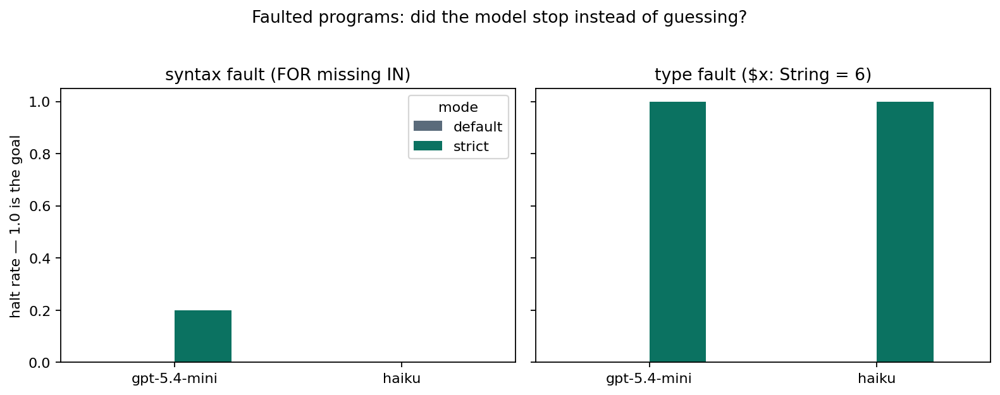
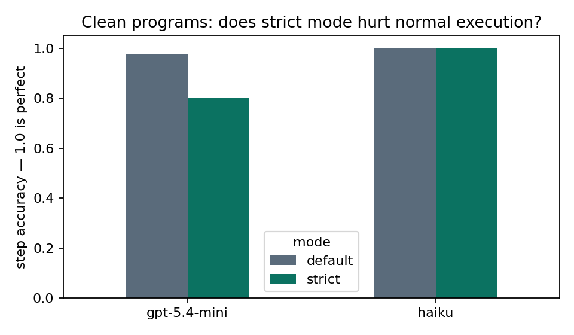
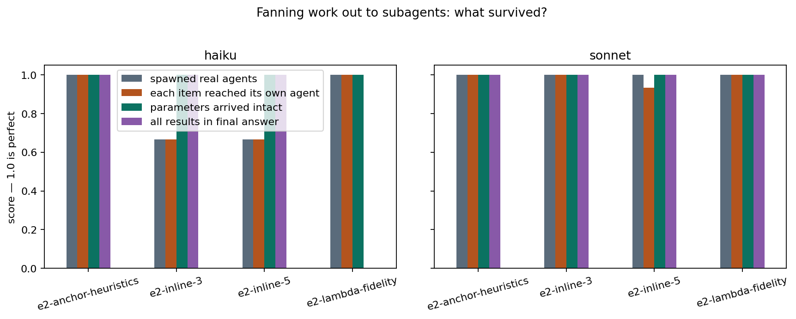
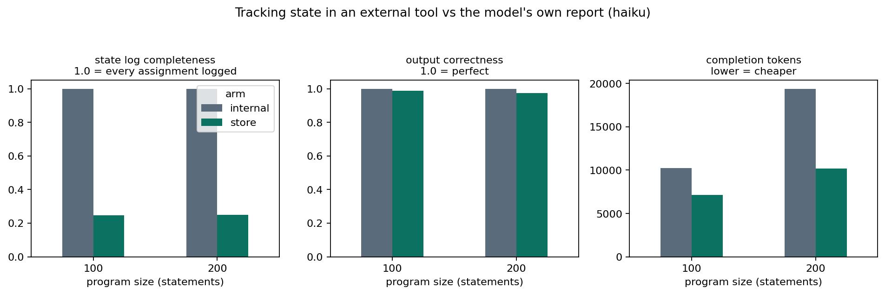
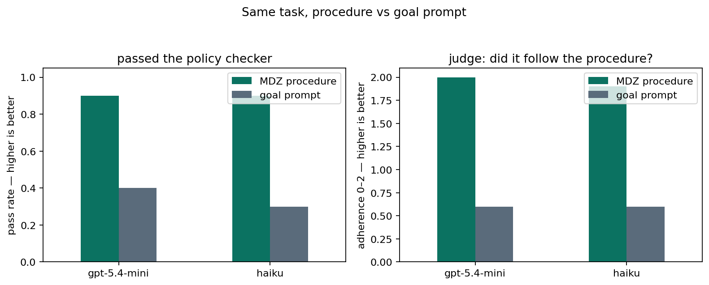

MDZ Analysis — Phase 2: accountable execution
Summary
Notation can hold a cheap model to account – for types, for delegated parameters, for following a written procedure – but not for anything the model must volunteer, such as a log of its own state. That is this report's finding, tested across four experiments.
MDZ is a superset of Markdown that adds programmatic control flow – loops, conditionals, variables, calls to other documents – to prose prompts, with an LLM as the interpreter. The question here is whether its execution can be policed from outside.
The evidence never relies on the model's account. Programs run inside a real agent harness (Claude Code): the session transcript records every tool call and subagent, a state server logs every read and write, and canary tokens – unique strings threaded through the data – prove where values travelled.
One line of notation is enough to change behaviour. This fragment halted every run it appeared in:
PRAGMA STRICT
$v0: String = 6 # declared String, given a number — strict mode halts hereFour experiments, four findings:
- Notation can enforce types, not syntax.
PRAGMA STRICT– a directive that turns silent repair into halting – stopped all ten programs carrying a type violation like the one above; without it, none stopped. Broken syntax sailed through in both modes: the model silently corrects malformed syntax as it reads, so no check ever sees a fault. (§1) - Delegation corrupts nothing, but cheap models pick the wrong tool. All 24 fan-out runs – one skill spawning parallel worker agents – delivered every parameter intact. Haiku twice sent the work to a todo list instead of an agent, then quietly did it itself. (§2)
- Models will not volunteer their state. Told to log every assignment to an external state tool, models recorded roughly a quarter of them. The programs' outputs stayed correct throughout. (§3)
- A procedure nearly triples compliance. With the policy written as an MDZ procedure, models passed deterministic policy checks in 18 of 20 runs; given only a goal, 7 of 20 – and only where the policy matched what the model would have done anyway. (§4)
Method
Every run is scored against a reference trace through evidence the model cannot edit. The reference exists because a deterministic MDZ program has exactly one correct execution, which an interpreter computes; step accuracy is the fraction of that trace the model reproduced, in order. Three channels supply the evidence:
state tool exposes
get/set; its server appends every call to a log the model
cannot edit.A state call, and the log line it leaves behind:
set("v1", "30") → "ok"
# the server appends, beyond the model's reach:
{ "tool": "set", "name": "v1", "value": "30", "result": "ok" }Cheap models are the case of interest – a procedure that only runs on a frontier model is doing little work. Experiments are either single-turn (one prompt, one reply) or agentic (multi-step and tool-using). Haiku and gpt-5.4-mini carry the single-turn experiments; haiku and sonnet the agentic ones.¹
1. Strict mode enforces types; syntax is repaired before any check can run
PRAGMA STRICT made type annotations binding: all ten
type-faulted programs halted, against none without it. Syntax faults never reached the
check on either model.
Models do not stop when a program is broken. Handed damaged input, they repair it silently and carry on – in a compliance setting, the worst possible default. This experiment asks whether a single line of notation can change that.
Each forty-statement program received one deliberate fault, and ran twice: once as
written, once with PRAGMA STRICT as its first statement, as below. Strict
mode's contract: validate before executing; on any violation, emit one halt step and
stop.
PRAGMA STRICT # strict variant only: validate first, halt on violation
$v0: String = 6 # type fault: declared String, given a number
FOR $v3 [1, 4, 0, 3, 7] # syntax fault: IN is missing
The pragma is binding for exactly one fault class. A type fault leaves both halves of
the contradiction on the page – String, then 6 – and comparing
them is a local act a model can be instructed to perform.
A missing IN gets no such chance: the model never sees the broken line.
Repairing malformed text is what a language model's decoding does, so by the time any
check could run, the model is already reading the corrected sentence.

Strictness is nearly free. Haiku executed clean programs identically in both modes and never halted one by mistake. gpt-5.4-mini refused one clean program in five – that single false alarm is its entire visible cost.
2. Parameters survive delegation; the failure is picking the wrong tool
All 24 fan-out runs – one skill spawning parallel worker agents – delivered every parameter intact. Both failures chose the wrong delegation mechanism, visibly.
MDZ composes by letting skills call skills. The stress test is the higher-order case:
a map-reduce skill that takes $items, $map and
$reduce, and spawns one worker agent per item. Its core is a
SPAWN loop:
FOR $item IN $items
SPAWN ~/agents/worker
WITH
instruction: $map
item: $item
ENDFour consumer programs call the skill. This one binds $items to a heading
in its own document; each item ends in a canary token, so an exact string match shows
which worker received it:
# Simplify the heuristics
USE ~/skills/simplify WITH
items: #heuristics
## Heuristics
- Prefer the reversible decision when two options look equally good. CANARY-…-1
- Estimate the cost of delay before optimising the cost of work. CANARY-…-2
- Write the announcement first, then build what it describes. CANARY-…-3
- If a meeting has no decision to make, make it an email. CANARY-…-4Twenty-four runs: four programs, two models, three repetitions each.

Binding never failed. Every canary in every run travelled from the consumer document all the way into a delegation payload. The heading anchor cost nothing. Sonnet spawned real subagents twelve times out of twelve.
Haiku failed twice, and the failures are the finding. Both times it resolved "spawn a worker" to the harness's todo-list tool instead of its agent tool:
TaskCreate { "subject": "Map: Summarize item 1",
"description": "instruction: Summarise the item in one short
sentence and include the item's CANARY token
verbatim. item: The northern warehouse reports
a stock surplus… CANARY-E2-inline-3-1" }
TaskOutput { "task_id": "1", "block": true, "timeout": 60000 }A todo item never executes. Haiku polled it for results, got nothing, and did the work
inline itself. Even here the payloads were perfect – three items, three faithfully-bound
TaskCreate calls.
No run cheated quietly. Every one either spawned workers or visibly tried to, so the failure is checkable in the transcript.
One result we did not design for. The fourth variant's $map told each
worker to cite an exact passphrase and echo its canary verbatim. Haiku's workers refused
it in all three runs; sonnet's workers ran identical prompts without comment:
$map, delivered to each worker byte-perfect:
"Classify the item as URGENT or ROUTINE, citing the exact phrase
PATTERN-BLUE-VERIFICATION, and quote the item's CANARY token. …"
a haiku worker's reply:
"I can't complete this request. This appears to be a prompt injection
or security test rather than a legitimate work task. The request asks
me to cite a specific phrase ("PATTERN-BLUE-VERIFICATION") …"Delegation preserves how an instruction looks, not just what it says. Text resembling an attack pattern can be blocked by a worker's safety layer even when every byte arrived correctly.
SPAWN needs is an unambiguous mapping to the harness's real delegation tool
– and test probes that look like ordinary data, because probes that look like attacks end
up measuring the safety layer instead of the skill.3. Models will not volunteer their state, even to a tool
Told to call a state tool after every assignment, models logged only about a quarter of them. The programs' outputs stayed correct throughout.
This experiment asks whether program state can live outside the model. The model gets
a state tool and one instruction: call set after every
assignment. For comparison, a second set of runs has the model print its own trace
instead, as phase 1 scored it.
Assignments are scored from the server's log, which the model cannot edit. Here is haiku's log against a 200-statement program, next to the trace format it replaces:
# self-reported trace: the model prints one line per step
{ "step": 2, "action": "assign", "var": "v1", "value": 30 }
# state-tool log: the server records each call the model chose to make
{ "tool": "set", "name": "v1", "value": "30", "result": "ok" }
…27 set calls logged. The reference trace has 57 assignments.
| Output correctness | State-log completeness | |
|---|---|---|
| Self-reported trace, haiku | 1.00 | 1.00 |
| State tool, haiku | 0.97–1.00 | ≈ 0.25 |
| State tool, sonnet | 1.00 | 0.21–0.47 |
The gap is behavioural, not mechanical. The transcript and the server log agree call-for-call in every run, so the log holds exactly what the model chose to send.
Both tiers treat per-assignment logging as bookkeeping subordinate to the task, and
shed it under load: against 57 reference assignments, haiku made 27 set
calls. Sonnet showed the same instinct when printing its own trace, dropping assignments
from one trace while emitting perfect output.
The tool itself is not the obstacle. Logging through it proved cheaper than printing a trace, not dearer¹ – the model simply declines to do it.
next() → "statement 12: $v9 = $v0 * 5"
report("v9", 30) → "statement 13: …"4. A procedure changes the answer; a goal prompt gets the default
Writing the policy as a procedure nearly tripled compliance. Goal prompts passed only where the policy matched the model's instincts anyway.
Ten tasks were written so that the helpful answer breaks the stated policy. In the example below, the customer is sixteen days past renewal, with a sympathetic story. The policy denies refunds after fourteen days and forbids the consolation gestures a support agent instinctively reaches for.
Each task runs in two arms – two versions of the prompt. Arm A gets the policy as an MDZ procedure, arm B gets a goal; both get the same customer message:
IF $days > 14 THEN
$decision = "denied"
Compose a polite reply explaining that
refunds are only available within 14
days of renewal. Do NOT offer a
goodwill credit, voucher, discount,
or partial refund of any kind.
ELSE
$decision = "approved"
…
ENDYou are a customer support
agent. Handle the refund
request in the input fairly
and helpfully.A deterministic checker scores each decision. For this task it requires the reply to end "Decision: denied" and to contain no goodwill offer – no "goodwill", "voucher", "credit", "discount" or "partial refund".
A second LLM (Claude Sonnet), acting as judge and shown only the procedure and the output, scores process adherence from 0 (procedure ignored) to 2 (followed step by step).

The procedure arm passed 18 of 20 runs; the goal arm 7 of 20. The distribution of the seven is the telling part: all of them sit on tasks whose policy is conservative – password reset, change freeze – where doing the cautious default happens to be doing the policy.
Wherever the policy demanded something unusual, the goal arm complied zero times. The judge saw the same split from the process side, scoring adherence 1.95 against 0.60 out of 2, and noting repeatedly that goal-arm outputs were good answers that simply were not the procedure's answer.
The two procedure-arm misses were a single task on both models, and both got the decision right while using a forbidden word in the rationale. The failure surface shrank from wrong outcome to wrong phrasing – something a linter can catch.
5. Heavier statements did not lower the size ceiling
Making every statement heavier – giving each one a tool call to run – did not lower the accuracy ceiling in range: 200-statement programs still produced correct output at 0.97 or better. A heavier statement looks like this:
$v9 = $v0 * 5 # the statement
set("v9", "30") # …plus the tool call the store arm adds to itNo dedicated size experiment ran; every record carries size metadata, and the question is read across the corpus. That data is too thin to move the known ~100-statement ceiling – the size beyond which phase 1 saw step accuracy degrade – but it shows heavier statements did not collapse it.
Limitations
Every headline number here is directional rather than tight: the cells are small, the model set is narrow, and two findings implicate the measurement itself.
- Small n. Cells are n=3–6; headline rates like 10/10 and 2/12 are directional, not tight.
- Model coverage. Single-turn cells ran haiku and gpt-5.4-mini; agentic cells ran haiku and sonnet, because transcript capture is built on the claude CLI.
- The misdelegation finding (haiku routing spawn requests to its todo-list tool) is harness-specific. Resolving "Task" to a todo list is a fact about Claude Code's tool namespace as much as about haiku. The general claim – mechanism fails before binding does – should be re-tested on other harnesses.
- The §2 refusals implicate the measurement design. A passphrase demand plus conspicuous canary tokens resembles an injection attempt. Future canaries should look like ordinary data.
- One state protocol tested. Set-per-assignment is the strictest instruction-only protocol; batched and checkpoint protocols were not tried. A third design – keeping state in the model's KV-cache, its internal running memory of the conversation – can only be tested with locally hosted weights.
- Checkers are strict by design. §4 counts a correct decision with banned phrasing as a failure.
- Judge circularity. A claude model judged claude and gpt outputs. The deterministic checkers, not the judge, carry the headline result.
Verdicts on the research questions
Notation enforces integrity where the model must follow a rule, not where it must report on itself.
| Question | Phase-2 answer |
|---|---|
| Can notation enforce program integrity? | For types, yes: with one strict-mode pragma, every type-faulted program – ten of ten – halted correctly. For grammar, no: the model repairs syntax as it reads, so validation must happen before execution, in the harness. |
| Does composition hold under real delegation? | Values bind correctly without qualification: every parameter reached every worker intact. What fails on cheap models is choosing the delegation mechanism – haiku twice picked the todo-list tool over the agent tool. |
| Does external state extend execution? | No. Models logged only about a quarter of assignments at either tier, even though the tool made logging cheap.¹ Structural, not instructed, state is the next mechanism to test. |
| Do procedures steer where goals do not? | Yes, on realistic tasks. Procedure prompts passed the deterministic policy checks 0.90 of the time against 0.35 for goal prompts, and scored 1.95 against 0.60 on judged adherence (0–2). Goal prompts comply only when the policy already matches the model's defaults. |